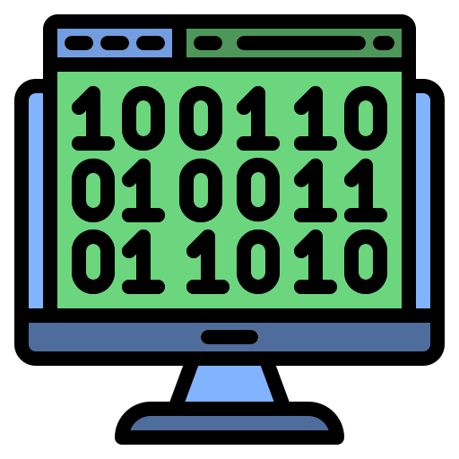

Curso de Informática
profgabrielfelippe@gmail.com
Material
Websites
Ferramentas
Dicionário
Quiz
Simulador
Biblioteca
Unidades de Informação
Tipos de Arquivos
História da Computação
História da Computação
Todas as Eras
Era Antiga
Era Mecânica
Era Eletrônica
Era Moderna